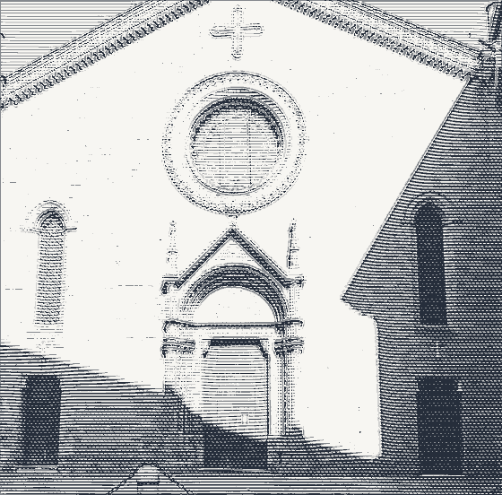

ProfiloAvvocato penalista
Barbara Renzullo
Assiste sia la persona indagata o imputata sia la persona offesa dal reato, in ogni fase e grado del procedimento, davanti alle autorità giudiziarie del distretto di Bologna e alle Magistrature Superiori.
Quasi trent'anni di attività nel Foro di Bologna, guidati da dedizione, passione e impegno.

In questa chiesa di San Procolo, la quale fu dei monaci di San Benedetto, l'Università degli scolari ultramontani teneva sue radunanze durante il secolo XIII. E qui fuori stavano le tombe di Bulgaro e di Martino, i quali con Iacopo ed Ugo, tutti quattro dottori dello Studio bolognese, furono chiamati l'anno 1158 da Federico I detto Barbarossa alla dieta in Roncaglia, ove resero la sentenza intorno i diritti dell'Impero e delle città, rimasta famosa. Memorie poste l'anno 1903.
IPercorso professionale
Le tappe del percorso.
- 1997
Patrocinante
Inizio dell'attività come patrocinante abilitata avanti le Preture del distretto della Corte d'Appello di Bologna.
- 1999
Iscrizione all'Albo
Conseguimento del titolo di avvocato e iscrizione all'Albo degli Avvocati di Bologna.
- 2013
Cassazionista
Abilitazione al patrocinio avanti la Corte di Cassazione e le Magistrature Superiori.
Difese d'ufficio
Iscritta alle liste dei difensori d'ufficio, a garanzia del diritto alla difesa tutelato dalla Costituzione.
Patrocinio a spese dello Stato
Iscritta agli elenchi del gratuito patrocinio, per chi non dispone dei mezzi per sostenere le spese legali.
IIMaterie trattate
Difesa e tutela in ogni ambito penale.
- Diritto penale
- Diritto penale minorile
- Procedura penale
Reati contro la persona
Lesioni, minacce, diffamazione e violazioni della libertà individuale.
Reati contro il patrimonio
Furti, truffe, appropriazione indebita e danneggiamenti.
Pubblica amministrazione
Procedimenti relativi a reati commessi da o contro pubblici ufficiali.
Reati in ambito familiare
Maltrattamenti in famiglia e violazione degli obblighi di assistenza familiare.
Tutela degli animali
Procedimenti relativi al maltrattamento e alla protezione degli animali.
Reati ambientali
Violazioni delle normative a tutela dell'ambiente e del territorio.
Costituzione di parte civile. Lo studio assiste anche le persone offese che intendono costituirsi parte civile nel processo penale per ottenere il risarcimento del danno.